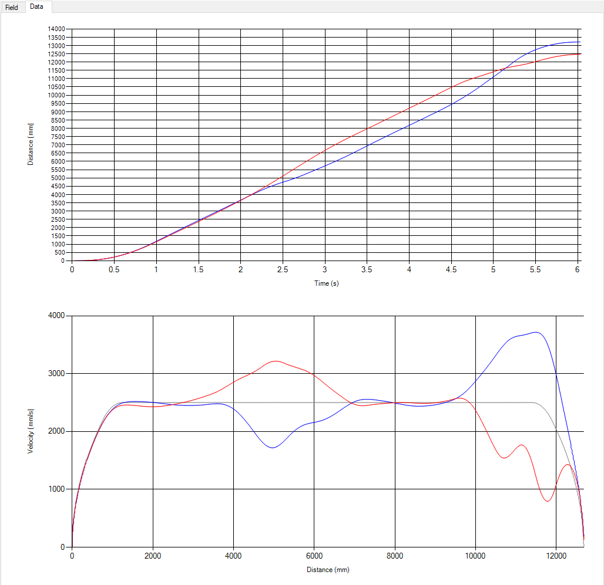

Motion Profile Mapper
In my final year of high school, as lead programmer of FRC Team 3539, my main goal was to develop an application that creates paths on the field that the robot could read and follow based solely on user input. In the first 15 seconds of every game, the robot needed to move by itself, and instead of hard-coding motor speeds and times manually, this application guided the robot along a set path. This was easier to use and allowed us to be more versatile during competitions, where the ability to change based on your teammates' needs was essential. Special thanks to our mentor, Mr. VanCamp, who provided framework and was absolutely essential to reaching the end product.

The User Interface
In the game for 2018, there were obstacles on the field (shown as green, red, and yellow boxes) that needed to be traversed
autonomously. We could only stand back and watch as the robot moved on its own, without any human input. All
robot movement was guided by the paths generated in this program, as seen in the demonstration.
The user creates points on the chart that the robot should follow, and the program uses those points to create two
separate paths, one for each side of the robot.
Velocity Calculation
After two splines are generated for the left and right sides of the robot, the application then creates a complete
guide of velocity values that the robot should apply to its motors in order to accurately follow the path. This was
an especially difficult task, since the motors have physical limitations beyond what might be mathematically possible.
Some issues that we had to work around were the minor physical differences between motors, the need to ramp-up and ramp-down
velocities for optimal performance (including battery saving), and possible variations in actual field measurements from competition to competition.
Shown here are the corresponding velocity maps for the
left
and
right
sides of the robot. Turns are indicated
by an increase in velocity for one side and a decrease in velocity for the other side.

Competition Versatility
During competition, we were often paired with teammates that had autonomous plans that conflicted with ours.
For example, both of our robot paths could end up colliding during the game, which could break the robots. In those cases,
instead of having to re-code, debug, and test new plans (which was impossible given competition time constraints), we simply opened
up the motion profile mapper, drew a new path according to their needs, and had everything ready to go within minutes. This
proved to be critical to our success in many matches.
Proper Programming
One major difference between this project and my other projects at the time was the necessity of programming professionally.
Upon graduation, this application was going to be passed down to future programmers on the team to improve and maintain for years
to come. Because of that, I needed to make sure that all code that I wrote was clean, easy to follow, and properly documented. This,
of course, is much easier said than done. However, this was where I developed most of my good programming practices, which have
influenced the structures of my future projects. This application is still used by team programmers today!
Use the menu link to my GitHub page to find the version of the mapper that I last modified before graduating. Feel free to download it and test it out! Here you can watch our robot following a motion profile path live at the FRC State Championship in Michigan. Watch team 3539 for the first 15 seconds!
Performance Video